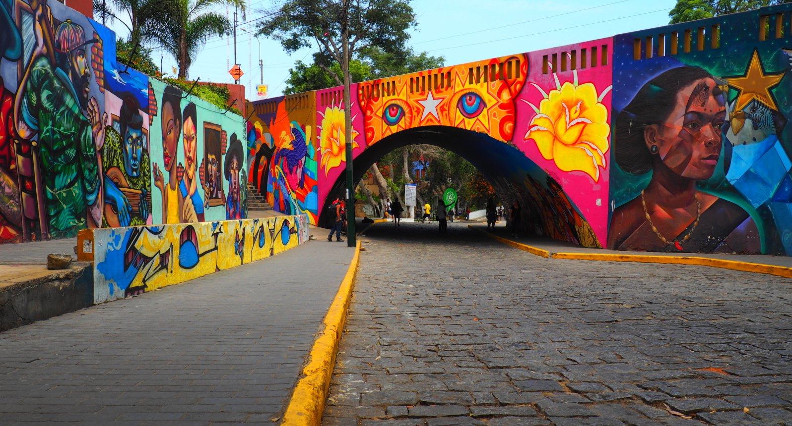

Mapa Sonoro
×

Graffiti en Av. Bolognesi - Barranco
Esta obra representa la voz de la juventud barranquina, con trazos que evocan libertad y protesta social.
×

Graffiti en la Av. Universitaria - Comas
Un mural que muestra escenas cotidianas del distrito, mezclando cultura urbana con historia local.
×

Graffiti cerca del Malecón - Miraflores
Este arte urbano busca concientizar sobre la protección del medio ambiente y el océano.
×

Grafiti en el Parque Zonal - SJL
Una poderosa imagen que denuncia la violencia y lucha por los derechos de la mujer.